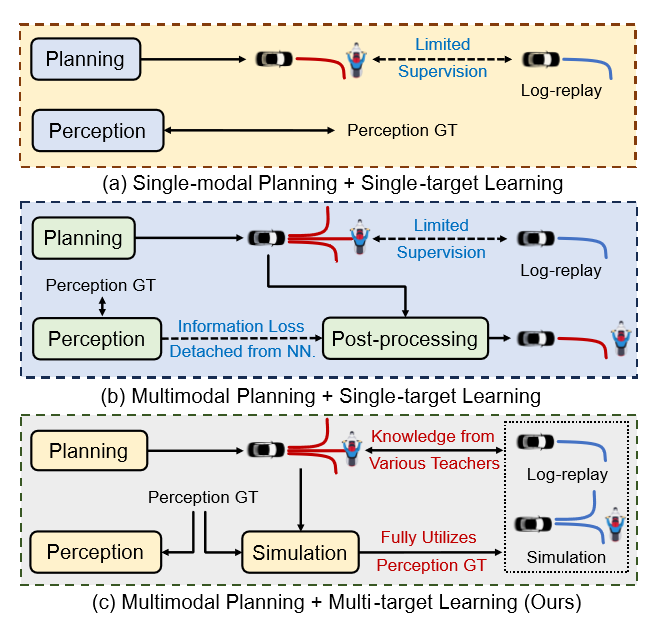
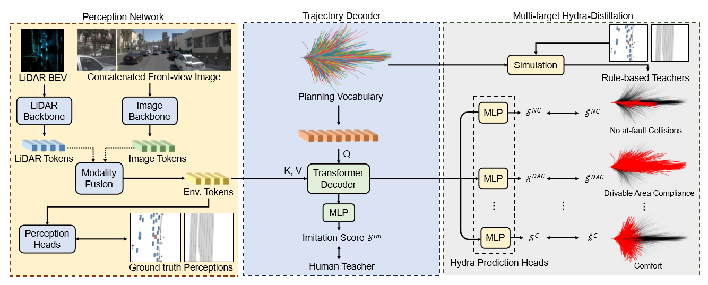

目次
Hydra-MDP: End-to-end Multimodal Planning with Multi-target Hydra-Distillation
Zhenxin Li1,2、Kailin Li3、Shihao Wang1,4、Shiyi Lan1、Zhiding Yu1、Yishen Ji5、Zhiqi Li5、Ziyue Zhu6、Jan Kautz1、Zuxuan Wu2、Yu-Gang Jiang2、Jose M. Alvarez1
1NVIDIA、2Fudan University、3East China Normal University、4Beijing Institute of Technology、5Nanjing University、6Nankai University
arXiv:2406.06978v4 [cs.CV]、2024年8月30日
翻訳について：原文 PDF は
31_Hydra_MDP_2406.06978.pdf（全 5 ページ）。本文、図の説明、図中ラベル、表、脚注、付録を訳出し、論文タイトルと参考文献は原文のまま掲載。図は原図を掲載し、英語ラベルの日本語訳を併記した。数式・数値・引用番号・コードの識別子は原文を維持。原文の記述に関する補足は「訳注」と明示し、本文と区別している。
要旨
本稿では、教師–生徒モデルにおいて複数の教師を用いる新しいパラダイムである Hydra-MDP を提案する。この手法は、人間の教師とルールベースの教師の双方からの知識蒸留を用いて生徒モデルを学習する。生徒モデルは多頭（マルチヘッド）デコーダを備え、さまざまな評価指標に合わせた多様な軌道候補を学習する。ルールベースの教師の知識により、Hydra-MDP は微分不可能な後処理に頼ることなく、環境が計画にどのように影響するかを End-to-End に学習する。本手法は Navsim チャレンジで 1 位を獲得し、多様な走行環境・条件にわたる汎化性能の大幅な向上を示した。詳細は https://github.com/NVlabs/Hydra-MDP を参照されたい。

図1：End-to-End 計画パラダイムの比較。（a）単一モーダル計画＋単一目標学習、（b）マルチモーダル計画＋単一目標学習、（c）マルチモーダル計画＋多目標学習（本手法）。
図中ラベル：Planning＝計画、Perception＝知覚、Perception GT＝知覚の正解データ、Limited Supervision＝限定的な教師信号、Log-replay＝ログ再生、Post-processing＝後処理、Information Loss / Detached from NN.＝情報の損失／ニューラルネットワークから切り離されている、Knowledge from Various Teachers＝さまざまな教師からの知識、Simulation＝シミュレーション、Fully Utilizes Perception GT＝知覚の正解データを最大限に活用
1 はじめに
生のセンサ入力からニューラルプランナを学習する End-to-End 自動運転は、完全自律を達成するための有望な方向性と考えられている。この分野では有望な進展があるものの［11, 12］、近年の研究［4, 8, 14］は、模倣学習（IL）手法の複数の脆弱性と限界、とりわけ機能不全な評価指標や暗黙のバイアスといった、オープンループ評価に内在する問題を明らかにした［8, 14］。これは、安全性、効率性、快適性、交通規則の遵守を保証できないという点で重大である。この主要な限界に対処するため、いくつかの研究はクローズドループ指標の導入を提案している。クローズドループ指標は、機械学習によるプランナが単に人間の運転者を模倣するだけでなく、本質的な基準を満たしていることを確かめることで、End-to-End 自動運転をより効果的に評価する。
したがって、End-to-End 計画は理想的には多目標（multi-target）かつマルチモーダルなタスクである。ここで多目標計画とは、オープンループとクローズドループのいずれの設定に由来するさまざまな評価指標をも満たすことを指す。この文脈において、マルチモーダルとは各指標に対して複数の最適解が存在することを示す。
既存の End-to-End 手法［4, 11, 12］は、多くの場合、後処理によってクローズドループ評価を考慮しようとする。しかしこれは一貫したパイプラインではなく、完全な End-to-End パイプラインと比べて追加の情報が失われる可能性がある。一方、ルールベースのプランナ［8, 18］は不完全な知覚入力に苦しむ。こうした不完全な入力は、正解（GT）ラベルではなく予測された知覚に依存するため、クローズドループ指標とオープンループ指標の両方においてルールベース計画の性能を低下させる。
これらの問題に対処するため、本稿では Hydra-MDP（Multimodal Planning with Multi-target Hydra-distillation）と呼ぶ新しい End-to-End 自動運転フレームワークを提案する。Hydra-MDP は、新しい教師–生徒型の知識蒸留（KD）アーキテクチャに基づく。生徒モデルは、人間の教師とルールベースの教師の双方からの KD を通じて、さまざまな評価指標に合わせた多様な軌道候補を学習する。多目標 Hydra 蒸留は多頭デコーダによって具体化され、これにより専門化した教師たちの知識を効果的に統合する。Hydra-MDP はまた拡張可能な KD アーキテクチャを備えており、追加の教師を容易に組み込むことができる。

図2：Hydra-MDP の全体アーキテクチャ。
図中ラベル：Perception Network＝知覚ネットワーク、LiDAR BEV＝LiDAR 鳥瞰図（BEV）、Concatenated Front-view Image＝連結した前方視画像、LiDAR Backbone＝LiDAR バックボーン、Image Backbone＝画像バックボーン、LiDAR Tokens＝LiDAR トークン、Image Tokens＝画像トークン、Modality Fusion＝モダリティ融合、Env. Tokens＝環境トークン、Perception Heads＝知覚ヘッド、Ground truth Perceptions＝知覚の正解データ、Trajectory Decoder＝軌道デコーダ、Planning Vocabulary＝計画語彙、Transformer Decoder＝Transformer デコーダ、Imitation Score＝模倣スコア、Human Teacher＝人間の教師、Multi-target Hydra-Distillation＝多目標 Hydra 蒸留、Simulation＝シミュレーション、Rule-based Teachers＝ルールベースの教師、Hydra Prediction Heads＝Hydra 予測ヘッド、No at-fault Collisions＝自責衝突なし、Drivable Area Compliance＝走行可能領域の遵守、Comfort＝快適性
生徒モデルは学習中に環境の観測を用いる一方、教師モデルは正解（GT）データを用いる。この構成により、教師モデルはより良い計画予測を生成でき、生徒モデルの効果的な学習を助ける。環境の観測を用いて生徒モデルを学習することで、生徒モデルはテスト時に GT の知覚が得られない現実的な状況に巧みに対処できるようになる。
本稿の貢献は以下のようにまとめられる。
- 多目標 Hydra 蒸留による End-to-End マルチモーダル計画の汎用的なフレームワークを提案する。これにより、モデルはルールベースのプランナと人間の運転者の双方からスケーラブルな形で学習できる。
- 本手法は、Navsim におけるシミュレーションベースの評価指標のもとで最先端の性能を達成する。
2 解法
2.1 準備
\( O \) をセンサ観測、\( \hat{P} \) と \( P \) をそれぞれ正解の知覚と予測された知覚（例：3D 物体検出、車線検出）、\( \hat{T} \) をエキスパート軌道、\( T^* \) を予測軌道とする。\( \mathcal{L}_{im} \) は模倣損失を表す。本節ではまず、主流の 2 つのパラダイムと、我々が提案するパラダイム（図1）を紹介する。
A. 単一モーダル計画＋単一目標学習。このパラダイム［11, 12, 14］では、計画ネットワークがセンサ観測から計画軌道を直接回帰する。正解の知覚は補助的な教師信号として使用できるが、計画の出力には影響しない。簡単のため、知覚の損失は式に含めない。処理全体は次のように定式化できる。
\[ \mathcal{L} = \mathcal{L}_{im}(T^*, \hat{T}), \tag{1} \]
ここで \( \mathcal{L}_{im} \) は通常 L2 損失である。
B. マルチモーダル計画＋単一目標学習。この手法［1, 4］は複数の軌道 \( \{T_i\}_{i=1}^{k} \) を予測し、それらとエキスパート軌道との類似度を計算する。
\[ \mathcal{L} = \sum_i \mathcal{L}_{im}(T_i, \hat{T}), \tag{2} \]
ここで \( \mathcal{L}_{im} \) は KL ダイバージェンス［4］または最大マージン損失［1］とすることができる。知覚出力 \( P \) は、コスト関数 \( f(T_i, P) \) を介して適切な軌道を後処理するために明示的に用いられる。コストが最小の軌道が選択される。
\[ T^* = \arg\min_{T_i} f(T_i, P), \tag{3} \]
これは不完全な知覚 \( P \) に基づく微分不可能な処理である。
C. マルチモーダル計画＋多目標学習。我々はこのパラダイムを提案し、ニューラルネットワーク \( \tilde{f} \) によってさまざまなコスト（例：衝突コスト、走行可能領域遵守コスト）を同時に予測する。これは教師–生徒蒸留の形で行われ、教師は正解の知覚 \( \hat{P} \) にアクセスできる一方、生徒はセンサ観測 \( O \) のみに依存する。このパラダイムは次のように定式化できる。
\[ \mathcal{L} = \sum_i \mathcal{L}_{im}(T_i, \hat{T}) + \mathcal{L}_{kd}(f(T_i, \hat{P}), \tilde{f}(T_i, O)). \tag{4} \]
ここでは明確さのため、1 つのコスト関数 \( f \) のみを考える。予測コストが最小の軌道が選択される。
\[ T^* = \arg\min_{T_i} \tilde{f}(T_i, O). \tag{5} \]
強調しておくと、このフレームワークは微分不可能な後処理に制約されない。より多くのコスト関数を取り込むか、あるいは我々の実装（2.4 節）のように模倣の類似度を活用することで、End-to-End の形で容易に拡張できる。
2.2 全体フレームワーク
図2に示すように、Hydra-MDP は 2 つのネットワーク、すなわち知覚ネットワークと軌道デコーダから構成される。
知覚ネットワーク。我々の知覚ネットワークは、チャレンジ公式のベースラインである Transfuser［5, 6］を基盤としている。Transfuser は、画像バックボーン、LiDAR バックボーン、および 3D 物体検出と BEV セグメンテーションのための知覚ヘッドからなる。複数の Transformer 層［19］が両バックボーンの各ステージの特徴を結合し、異なるモダリティから有意な情報を抽出する。知覚ネットワークの最終出力は環境トークン \( F_{env} \) であり、画像と LiDAR 点群の双方から得られる豊富な意味情報を符号化している。
軌道デコーダ。Vadv2［4］に倣い、連続的な行動空間を離散化するために固定の計画語彙（planning vocabulary）を構築する。語彙を構築するため、まず元の nuPlan データベース［2］から 700K 本の軌道をランダムにサンプリングする。各軌道 \( T_i (i = 1, ..., k) \) は 40 個のタイムスタンプの \( (x, y, heading) \) からなり、これはチャレンジで求められる 10Hz の周波数と 4 秒先までの未来ホライズンに対応する。計画語彙 \( \mathcal{V}_k \) は 700K 本の軌道の K-means クラスタリング中心として形成され、\( k \) は語彙のサイズを表す。次に \( \mathcal{V}_k \) は MLP によって \( k \) 個の潜在クエリとして埋め込まれ、Transformer エンコーダ［19］の層に入力されたのち、自車状態 \( E \) に加算される。
\[ \mathcal{V}'_k = Transformer(Q, K, V = Mlp(\mathcal{V}_k)) + E. \tag{6} \]
\( F_{env} \) に含まれる環境の手がかりを取り込むため、Transformer デコーダを活用する。
\[ \mathcal{V}''_k = Transformer(Q = \mathcal{V}'_k, K, V = F_{env}). \tag{7} \]
ログ再生軌道 \( \hat{T} \) を用いて、人間の運転者を模倣するための距離ベースの交差エントロピー損失を実装する。
\[ \mathcal{L}_{im} = -\sum_{i=1}^{k} y_i \log(\mathcal{S}_i^{im}), \tag{8} \]
ここで \( \mathcal{S}_i^{im} \) は \( \mathcal{V}''_k \) の \( i \) 番目のソフトマックススコアであり、\( y_i \) はログ再生軌道と語彙との L2 距離から生成される模倣ターゲットである。L2 距離にソフトマックスを適用して確率分布を得る。
\[ y_i = \frac{e^{-(\hat{T} - T_i)^2}}{\sum_{j=1}^{k} e^{-(\hat{T} - T_j)^2}}. \tag{9} \]
この模倣ターゲットの背後にある直観は、人間の運転挙動に近い軌道候補に報酬を与えることである。
2.3 多目標 Hydra 蒸留
模倣ターゲットはプランナにある程度の手がかりを与えるものの、クローズドループの設定下で計画の決定を走行環境と関連付けるには不十分であり、衝突や走行可能領域からの逸脱といった失敗につながる［14］。そこで、我々の End-to-End プランナのクローズドループ性能を高めるため、本チャレンジにおけるシミュレーションベースの指標にプランナを整合させる学習戦略である多目標 Hydra 蒸留（Multi-target Hydra-Distillation）を提案する。
蒸留プロセスは 2 つのステップによって学習ターゲットを拡張する。（1）学習データセット全体について、計画語彙 \( \mathcal{V}_k \) のオフラインシミュレーション［8］を実行する。（2）学習過程において、\( \mathcal{V}_k \) 内の各軌道に対するシミュレーションスコアからの教師信号を導入する。あるシナリオについて、ステップ 1 は各指標 \( m \in M \) と \( i \) 番目の軌道に対する正解シミュレーションスコア \( \{\hat{\mathcal{S}}_i^m | i = 1, ..., k\}_{m=1}^{|M|} \) を生成する。ここで \( M \) は本チャレンジで用いられるクローズドループ指標の集合を表す。スコア予測のために、潜在ベクトル \( \mathcal{V}''_k \) を一連の Hydra 予測ヘッドで処理し、予測スコア \( \{\mathcal{S}_i^m | i = 1, ..., k\}_{m=1}^{|M|} \) を得る。二値交差エントロピー損失により、ルールベースの運転知識を End-to-End プランナへ蒸留する。
\[ \mathcal{L}_{kd} = -\sum_{m,i} \hat{\mathcal{S}}_i^m \log \mathcal{S}_i^m + (1 - \hat{\mathcal{S}}_i^m) \log(1 - \mathcal{S}_i^m). \tag{10} \]
軌道 \( T_i \) について、各サブスコアの蒸留損失は式（4）における学習されたコスト値として機能し、その指標に対応する特定の交通規則への違反の度合いを測る。
2.4 推論と後処理
2.4.1 推論
予測された模倣スコア \( \{\mathcal{S}_i^{im} | i = 1, ..., k\} \) と指標のサブスコア \( \{\mathcal{S}_i^m | i = 1, ..., k\}_{m=1}^{|M|} \) が与えられたとき、与えられたシナリオにおいて各軌道が選択される尤度を測る統合コストを次のように計算する。
\[ \begin{aligned} \tilde{f}(T_i, O) = -\,&(w_1 \log \mathcal{S}_i^{im} + w_2 \log \mathcal{S}_i^{NC} + w_3 \log \mathcal{S}_i^{DAC} \\ &+ w_4 \log(5\mathcal{S}_i^{TTC} + 2\mathcal{S}_i^{C} + 5\mathcal{S}_i^{EP})), \end{aligned} \tag{11} \]
ここで \( \{w_i\}_{i=1}^{4} \) は、異なる教師への当てはまりの不完全さを緩和するための信頼度重みパラメータを表す。重みの最適な組み合わせはグリッドサーチによって求められ、典型的には \( 0.01 \le w_1 \le 0.1, 0.1 \le w_2, w_3 \le 1, 1 \le w_4 \le 10 \) の範囲に収まる。これは、模倣よりもルールベースのコストを優先する必要があることを示している。最終的に、全体のコストが最も低い軌道が選ばれる。
2.4.2 モデルのアンサンブル
我々は 2 つのモデルアンサンブル手法、すなわちエンコーダ混合（Mixture of Encoders）とサブスコアのアンサンブル（Sub-score Ensembling）を提示する。前者は線形層を用いて異なる視覚エンコーダからの特徴を結合し、後者は独立したモデル群のサブスコアの重み付き和を計算して軌道選択に用いる。
3 実験
3.1 データセットと評価指標
データセット。Navsim データセットは、既存の OpenScene［7］データセットを基盤としている。OpenScene は nuPlan［3］のコンパクト版であり、関連するアノテーションと 2 Hz でサンプリングされたセンサデータのみを含む。本データセットは主に意図の変化を伴うシナリオ、すなわち自車の過去のデータを外挿しても将来の計画が得られないシナリオに焦点を当てている。本データセットは、意味カテゴリ付きのアノテーション済み 2D 高精度地図と、物体の 3D バウンディングボックスを提供する。データセットは Navtrain と Navtest の 2 つに分割されており、それぞれ学習／検証用に 1192 シナリオ、テスト用に 136 シナリオを含む。
| 手法 | 入力 | NC | DAC | EP | TTC | C | Score |
|---|---|---|---|---|---|---|---|
| PDM-Closed［8］◇ | Perception GT | 94.6 | 99.8 | 89.9 | 86.9 | 99.9 | 89.1 |
| Transfuser［5］ | LiDAR & Camera | 96.5 | 87.9 | 73.9 | 90.2 | 100 | 78.0 |
| Vadv2-\( \mathcal{V}_{4096} \)［4］* | LiDAR & Camera | 97.1 | 88.8 | 74.9 | 91.4 | 100 | 79.7 |
| Vadv2-\( \mathcal{V}_{4096} \)［4］*-PP | LiDAR & Camera | 97.0 | 89.1 | 75.0 | 91.2 | 100 | 79.9 |
| Vadv2-\( \mathcal{V}_{8192} \)［4］* | LiDAR & Camera | 97.2 | 89.1 | 76.0 | 91.6 | 100 | 80.9 |
| Hydra-MDP-\( \mathcal{V}_{4096} \) | LiDAR & Camera | 97.7 | 91.5 | 77.5 | 92.7 | 100 | 82.6 |
| Hydra-MDP-\( \mathcal{V}_{8192} \) | LiDAR & Camera | 97.9 | 91.7 | 77.6 | 92.9 | 100 | 83.0 |
| Hydra-MDP-\( \mathcal{V}_{8192} \)-PDM | LiDAR & Camera | 97.5 | 88.9 | 74.8 | 92.5 | 100 | 80.2 |
| Hydra-MDP-\( \mathcal{V}_{8192} \)-W | LiDAR & Camera | 98.1 | 96.1 | 77.8 | 93.9 | 100 | 85.7 |
| Hydra-MDP-\( \mathcal{V}_{8192} \)-W-EP | LiDAR & Camera | 98.3 | 96.0 | 78.7 | 94.6 | 100 | 86.5 |
表1：Navtest 分割における性能。◇ Navsim 公式の PDM-Closed 実装は、nuPlan の実装と比べて制動操作とオフセットの定式化に不整合があるため、誤りを含む可能性がある［8］。すべての End-to-End 手法は、知覚ネットワークとして公式の Transfuser［5］を用いている。* 学習には我々の距離ベースの模倣損失を採用している。PP：Transfuser の知覚を後処理に用いる。PDM：学習ターゲットを PDM スコア全体とする。W：推論時に重み付き信頼度を用いる。EP：連続値の EP（Ego Progress、自車の進捗）指標に当てはまるようにモデルを学習する。（訳注：表中「Perception GT」は知覚の正解データ、「LiDAR & Camera」は LiDAR とカメラを入力とすることを表す。）
| 手法 | 画像解像度 | バックボーン | NC | DAC | EP | TTC | C | Score |
|---|---|---|---|---|---|---|---|---|
| PDM-Closed［8］◇ | - | - | 94.6 | 99.8 | 89.9 | 86.9 | 99.9 | 89.1 |
| Hydra-MDP-A | 256 × 1024 | ViT-L* | 98.4 | 97.7 | 85.0 | 94.5 | 100 | 89.9 |
| Hydra-MDP-B | 512 × 2048 | V2-99 | 98.4 | 97.8 | 86.5 | 93.9 | 100 | 90.3 |
| Hydra-MDP-C | 256 × 1024 256 × 1024 512 × 2048 | ViT-L* ViT-L† V2-99 | 98.7 | 98.2 | 86.5 | 95.0 | 100 | 91.0 |
表2：Navtest 分割におけるスケールアップの効果。◇ Navsim 公式の PDM-Closed 実装。* ViT-L は Depth Anything［20］から初期化。† ViT-L は Objects365［17］と COCO［15］で事前学習した EVA［9］。V2-99［13］は DD3D［16］から初期化。
評価指標。本チャレンジでは、次のように定式化される PDM スコアに基づいてモデルを評価する。
\[ PDM_{score} = NC \times DAC \times DDC \times \frac{(5 \times TTC + 2 \times C + 5 \times EP)}{12}, \tag{12} \]
ここでサブ指標 \( NC \)、\( DAC \)、\( TTC \)、\( C \)、\( EP \) は、それぞれ自責衝突なし（No at-fault Collisions）、走行可能領域の遵守（Drivable Area Compliance）、衝突までの時間（Time to Collision）、快適性（Comfort）、自車の進捗（Ego Progress）に対応する。蒸留プロセスおよびそれ以降の結果では、実装上の問題により \( DDC \) は無視している1。
3.2 実装の詳細
モデルは Navtrain 分割上で 8 基の NVIDIA A100 GPU を用い、合計バッチサイズ 256、20 エポックで学習する。学習率と重み減衰は公式ベースラインに従い、それぞれ \( 1 \times 10^{-4} \) と 0.0 に設定する。4 フレーム分の LiDAR 点を BEV 平面上にスプラッティングして密度 BEV 特徴を形成し、これを ResNet34［10］で符号化する。画像については、前方視画像を中央で切り出した左前方視画像および右前方視画像と連結し、既定で 256 × 1024 の入力解像度とする。特に断りのない限り、特徴抽出にも ResNet34 を用いる。データ拡張やテスト時拡張は一切用いない。
3.3 主要な結果
表1に示す結果は、ベースラインに対する Hydra-MDP の明確な優位性を際立たせている。異なる計画語彙［4］の検討において、より大きな語彙 \( \mathcal{V}_{8192} \) を用いると、さまざまな手法で性能が向上することが示された。さらに、微分不可能な後処理による性能向上は我々のフレームワークより小さく、一方で重み付き信頼度は性能を総合的に向上させる。異なる学習ターゲットの効果をアブレーションするため、初期の実験では連続値の指標 EP（Ego Progress）を考慮せず、PDM スコア全体の蒸留を試みた。しかし、PDM スコアの不規則な分布は性能低下を招き、これは我々の多目標学習パラダイムの必要性を示唆している。Hydra-MDP-\( \mathcal{V}_{8192} \)-W-EP の最終版では、EP を蒸留することで対応する指標を改善できる。
3.4 スケールアップとモデルのアンサンブル
先行文献［11］は、より大きなバックボーンは計画性能をわずかにしか改善しないことを示唆している。それにもかかわらず、我々はより大きなバックボーンを用いた場合の本モデルのスケーラビリティを示す。表2は、画像バックボーンとして ViT-L［9, 20］と V2-99［13］を用いた、最も性能の高い 3 つのバージョンの Hydra-MDP を示している。最終提出では、これら 3 つのモデルのサブスコアをアンサンブルしたものを推論に用いる。
参考文献
参考文献は原文のまま掲載した。
- Sourav Biswas, Sergio Casas, Quinlan Sykora, Ben Agro, Abbas Sadat, and Raquel Urtasun. Quad: Query-based interpretable neural motion planning for autonomous driving. arXiv preprint arXiv:2404.01486, 2024.
- Holger Caesar, Juraj Kabzan, Kok Seang Tan, Whye Kit Fong, Eric Wolff, Alex Lang, Luke Fletcher, Oscar Beijbom, and Sammy Omari. nuplan: A closed-loop ml-based planning benchmark for autonomous vehicles. arXiv preprint arXiv:2106.11810, 2021.
- Holger Caesar, Juraj Kabzan, Kok Seang Tan, Whye Kit Fong, Eric Wolff, Alex Lang, Luke Fletcher, Oscar Beijbom, and Sammy Omari. nuplan: A closed-loop ml-based planning benchmark for autonomous vehicles. arXiv preprint arXiv:2106.11810, 2021.
- Shaoyu Chen, Bo Jiang, Hao Gao, Bencheng Liao, Qing Xu, Qian Zhang, Chang Huang, Wenyu Liu, and Xinggang Wang. Vadv2: End-to-end vectorized autonomous driving via probabilistic planning. arXiv preprint arXiv:2402.13243, 2024.
- Kashyap Chitta, Aditya Prakash, Bernhard Jaeger, Zehao Yu, Katrin Renz, and Andreas Geiger. Transfuser: Imitation with transformer-based sensor fusion for autonomous driving. IEEE Transactions on Pattern Analysis and Machine Intelligence, 2022.
- NAVSIM Contributors. Navsim: Data-driven non-reactive autonomous vehicle simulation. https://github.com/autonomousvision/navsim, 2024.
- OpenScene Contributors. Openscene: The largest up-to-date 3d occupancy prediction benchmark in autonomous driving. https://github.com/OpenDriveLab/OpenScene, 2023.
- Daniel Dauner, Marcel Hallgarten, Andreas Geiger, and Kashyap Chitta. Parting with misconceptions about learning-based vehicle motion planning. In Conference on Robot Learning, pages 1268–1281. PMLR, 2023.
- Yuxin Fang, Quan Sun, Xinggang Wang, Tiejun Huang, Xinlong Wang, and Yue Cao. Eva-02: A visual representation for neon genesis. arXiv preprint arXiv:2303.11331, 2023.
- Kaiming He, Xiangyu Zhang, Shaoqing Ren, and Jian Sun. Deep residual learning for image recognition. In Proceedings of the IEEE conference on computer vision and pattern recognition, pages 770–778, 2016.
- Yihan Hu, Jiazhi Yang, Li Chen, Keyu Li, Chonghao Sima, Xizhou Zhu, Siqi Chai, Senyao Du, Tianwei Lin, Wenhai Wang, et al. Planning-oriented autonomous driving. In Proceedings of the IEEE/CVF Conference on Computer Vision and Pattern Recognition, pages 17853–17862, 2023.
- Bo Jiang, Shaoyu Chen, Qing Xu, Bencheng Liao, Jiajie Chen, Helong Zhou, Qian Zhang, Wenyu Liu, Chang Huang, and Xinggang Wang. Vad: Vectorized scene representation for efficient autonomous driving. In Proceedings of the IEEE/CVF International Conference on Computer Vision, pages 8340–8350, 2023.
- Youngwan Lee, Joong-won Hwang, Sangrok Lee, Yuseok Bae, and Jongyoul Park. An energy and gpu-computation efficient backbone network for real-time object detection. In Proceedings of the IEEE/CVF conference on computer vision and pattern recognition workshops, pages 0–0, 2019.
- Zhiqi Li, Zhiding Yu, Shiyi Lan, Jiahan Li, Jan Kautz, Tong Lu, and Jose M Alvarez. Is ego status all you need for open-loop end-to-end autonomous driving? arXiv preprint arXiv:2312.03031, 2023.
- Tsung-Yi Lin, Michael Maire, Serge Belongie, James Hays, Pietro Perona, Deva Ramanan, Piotr Dollár, and C Lawrence Zitnick. Microsoft coco: Common objects in context. In Computer Vision–ECCV 2014: 13th European Conference, Zurich, Switzerland, September 6-12, 2014, Proceedings, Part V 13, pages 740–755. Springer, 2014.
- Dennis Park, Rares Ambrus, Vitor Guizilini, Jie Li, and Adrien Gaidon. Is pseudo-lidar needed for monocular 3d object detection? In Proceedings of the IEEE/CVF International Conference on Computer Vision, pages 3142–3152, 2021.
- Shuai Shao, Zeming Li, Tianyuan Zhang, Chao Peng, Gang Yu, Xiangyu Zhang, Jing Li, and Jian Sun. Objects365: A large-scale, high-quality dataset for object detection. In Proceedings of the IEEE/CVF international conference on computer vision, pages 8430–8439, 2019.
- Martin Treiber, Ansgar Hennecke, and Dirk Helbing. Congested traffic states in empirical observations and microscopic simulations. Physical review E, 62(2):1805, 2000.
- Ashish Vaswani, Noam Shazeer, Niki Parmar, Jakob Uszkoreit, Llion Jones, Aidan N Gomez, Łukasz Kaiser, and Illia Polosukhin. Attention is all you need. Advances in neural information processing systems, 30, 2017.
- Lihe Yang, Bingyi Kang, Zilong Huang, Xiaogang Xu, Jiashi Feng, and Hengshuang Zhao. Depth anything: Unleashing the power of large-scale unlabeled data. arXiv preprint arXiv:2401.10891, 2024.